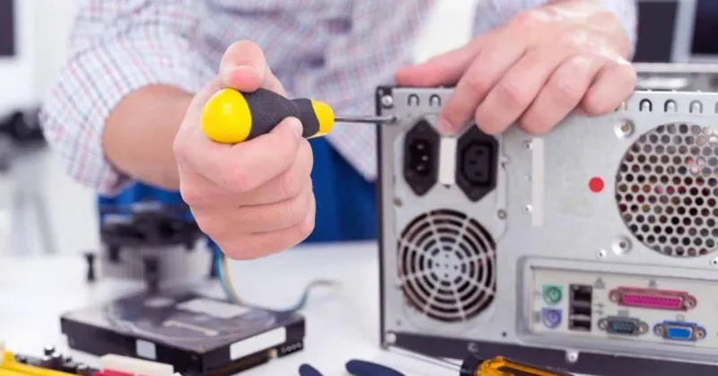

Mantén lejos líquidos y bebidas
Especialmente en verano, es común tener una botella de agua o un refresco cerca del PC, sobre todo cuando prevemos pasar muchas horas frente a él. Como sabéis los líquidos pueden ser fatales para los componentes electrónicos, y si no tenemos cuidado podríamos tener un accidente y derramar líquido en el teclado o incluso en el PC. Por ello, es importante que de entrada siempre los tengas alejados del equipo, para que incluso si lo derramas sin querer no afecte al PC.
Nunca dejes el PC en el suelo Por mucho que limpies tu hogar a menudo, el suelo es el primer sitio en el que se deposita el polvo y la porquería, por no hablar del que llevemos en el calzado y que vamos esparciendo al andar aunque no lo veamos (y si tienes mascotas, más todavía). Y dado que prácticamente la totalidad de las cajas de PC tienen ventiladores que meten aire fresco de fuera hacia dentro, absorberán este polvo con mucha más facilidad si están en el suelo que si están encima de la mesa.
Tener el PC en el suelo no es una buena idea Por otro lado, tener el PC en el suelo y especialmente si es debajo de la mesa donde tienes el monitor y los periféricos, lo hará más proclive a que le golpeemos sin querer o que tiremos de cables accidentalmente.
Por estos motivos, siempre será más recomendable tener la caja del PC encima de la mesa que en el suelo.
Limpiar el PC frecuentemente forma parte de su mantenimiento No nos cansaremos de repetir que hay que hacer una limpieza al PC con cierta frecuencia, con el objetivo de evitar que se acumule dentro la suciedad. Aunque tengas filtros anti polvo, parte de éste siempre termina entrando y depositándose en el hardware interno. Y ya sabes, el polvo con el calor se solidifica en forma de hollín, el cual es conductor de la electricidad, así que puede llegar a suponer un peligro para la integridad del equipo.

Nunca dejes el PC en el suelo Por mucho que limpies tu hogar a menudo, el suelo es el primer sitio en el que se deposita el polvo y la porquería, por no hablar del que llevemos en el calzado y que vamos esparciendo al andar aunque no lo veamos (y si tienes mascotas, más todavía). Y dado que prácticamente la totalidad de las cajas de PC tienen ventiladores que meten aire fresco de fuera hacia dentro, absorberán este polvo con mucha más facilidad si están en el suelo que si están encima de la mesa.
Tener el PC en el suelo no es una buena idea Por otro lado, tener el PC en el suelo y especialmente si es debajo de la mesa donde tienes el monitor y los periféricos, lo hará más proclive a que le golpeemos sin querer o que tiremos de cables accidentalmente.
Por estos motivos, siempre será más recomendable tener la caja del PC encima de la mesa que en el suelo.
Limpiar el PC frecuentemente forma parte de su mantenimiento No nos cansaremos de repetir que hay que hacer una limpieza al PC con cierta frecuencia, con el objetivo de evitar que se acumule dentro la suciedad. Aunque tengas filtros anti polvo, parte de éste siempre termina entrando y depositándose en el hardware interno. Y ya sabes, el polvo con el calor se solidifica en forma de hollín, el cual es conductor de la electricidad, así que puede llegar a suponer un peligro para la integridad del equipo.